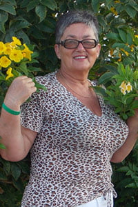

KEDVEZMÉNYES PROGRAM A HALLÁSBETEGSÉGEK ELLENI KÜZDELEMBEN!
Üdv, barátaim!
"Emlékezzenek egy egyszerű igazságra, és ne hallgassanak senkire: a hallás még igazán öregen is helyreállítható."
Másfél hónapja indult el az "Egészséges ország" program a halláskárosodás elleni harcban. A program során minden lakos kedvezményesen vásárolhat készítményt a hallás helyreállítására!
Hogy többet tudjunk meg az "Egészséges ország" programról, meghívtuk Anna Timovát, a fül-orr-gégészet elismert európai szakértőjét, aki több mint 30 éves tapasztalattal rendelkezik.
 Anna Timova.
Anna Timova, vezető
európai szakértő a fül-orr-gégészet területén,
több mint 30 éves tapasztalattal rendelkezik, a
Hallásjavító Központ vezetője.
Ez a szakember azt állítja, hogy néhány hónap alatt akár 18 éves halláskárosodáson és süketségen is képes segíteni. Hogy még a legelőrehaladottabb esetekben is jól érezhető a javulás, még idős korban is. És a fájdalom, mondja Anna Timova, a megfelelő megközelítéssel, napok alatt elmúlhat! 48 éves szakmai tevékenysége során minden állítását gyakorlattal igazolja. Sűrű programja miatt ritkán beszélget újságírókkal, de sikerült összehoznunk vele egy rövid interjút.
- Üdvözlöm, Anna. Igaz-e, hogy a fülbetegségek, mint a halláskárosodás és a süketség a felnőttkor "kötelező" velejárói?
- Üdvözlöm! Természetesen ez nem igaz. A felnőttkor kötelező kísérői a túlzott bizalom a szakemberekben, akikhez 10 éve járunk, noha sok eredményt nem kapunk. Valójában a belső fül és a hallóideg betegségei, a fertőző betegségek, például agyhártyagyulladás vagy influenza okozta középfülgyulladás, a trauma következményei és még a genetikai süketség sem jelentenek ítéletet semmilyen életkorban. Ez nem csoda, hanem egyszerű tudomány.
Mi több, ha ismeri a titkot, és alkalmaz némi tudományt, akár otthon is elérhet pozitív eredményeket, méghozzá elég gyorsan, ahogy azt már nem egyszer tapasztaltam ügyfeleimnél.
- És mi a titok nyitja?
- A titok abban rejlik, hogy megértsük, miért van fájdalma. A lexikonok általában 147 lehetséges okot sorolnak fel mind a süketség, mind a halláskárosodás esetében, de egy dolog biztos: a normál hallás küszöbe érezhetően magasabb, innen is vannak a hangérzékeléssel kapcsolatos problémák. És gyakran a hallószerv egyszerűen elhasználódik a rossz vérellátás miatt.
Íme a titok - a fül vérellátásának helyreállításával "megmenthetjük" a hallást.
- Igen, de nem úgy tartják, hogy 40 éves kor után szinte lehetetlen helyreállítani a hallást?
- Ez az egész badarság! Én magam is eldobtam egy hallókészüléket, amelyet egy baleset után viseltem, akkoriban 40 éves voltam.
- Melyek a hallószervek károsodásának első jelei?
- A süketség kialakulhat a középfül, a gégegyulladás, a hallóideg vagy az agy halláselemzésért felelős területének gyulladása miatt. Egyes fertőző betegségek, mint az agyhártyagyulladás, kanyaró, skarlát, mumpsz, influenza szintén okozhatják a süketség szerzett formáját. A foglalkozási ártalmaknak, rezgésnek, zajnak, ólomgőznek, higanynak, arzénnek való kitettség szintén halláskárosodást és süketséget okoz. Figyelembe kell venni, hogy az olyan állapotok és betegségek, mint a Meniere-kór, az öregedés, a toxoplazmózis, az erythema vesicularis, a fül akut gyulladása és a visszatérő középfülgyulladás befolyásolják a hallásszintet. Felnőtteknél a süketség hirtelen vagy fokozatosan alakulhat ki.
Az akut halláscsökkenés gyakran az agyszövet ischaemiás vagy fokozott hajlamú vérzésének, valamint erős hanghatásnak való akut kitettségnek, vérnyomás-ingadozásnak, fejsérülésnek és mérgezésnek a következménye. Egyes fertőző betegségek, különböző szerek ellenőrizetlen használata a süketség gyors kialakulását idézi elő, de a szerzett abszolút süketség meglehetősen ritka jelenség. A középfül gyulladásos megbetegedései gyakran nem vezetnek süketséghez, bár néha halláscsökkenés kialakulásához vezethetnek. Az otoszklerózis és az agyi erek ateroszklerózisa esetén a süketség lassan alakul ki, és az első jel lehet a tartós fülzúgás. Mivel a hallás romlása és a süketség előrehaladása nem azonnal, hanem fokozatosan következik be, a beteg csak akkor veszi észre, amikor a halláscsökkenés elér egy bizonyos szintet. Ezért fontos a társbetegségek megelőzése és a megfelelő módszerek alkalmazása a betegség kialakulásának megelőzése érdekében.

- Sikerült már valakinek visszaadnia a hallását?
- Nem is egyszer. És a legtöbbjük 40 - es éveikben járó, hétköznapi ember, akiknél a betegségek "a korral" alakultak ki. Nagyon hasonló problémákkal érkeznek: a hallóideg gyulladásával, részleges süketséggel és korral járó halláscsökkenéssel. Ezek a betegségek legyengítik őket, és akadályozzák az életüket.
Sírnak, fájdalmaik vannak, még járni is nehéz nekik. Pedig felnőttekről van szó. És panaszkodnak: "Miért én, miért én?" Én pedig azt válaszolom: Ne panaszkodjunk, inkább állítsuk helyre a hallását.
- Hogyan lehet helyreállítani a hallást ebben a korban?
- Egészen a közelmúltig fizioterápiával és mágnesterápiával segítettem az embereknek, egy 96 gyakorlatból álló sorozattal. Ez egy rendkívül hatékony, de nagyon nehéz és időigényes módszer. Az embereknek fájdalmaik vannak, nehéz, nincs elég idejük arra, hogy fizioterápiára járjanak. Úgy gondoltam, hogy kell lennie egy modernebb és egyszerűbb módszernek - és meg is találtam.
- Milyen izgalmas! Mesélne erről az olvasóinknak?
- Elmondom. Központunk az elsők között jutott hozzá a nagyotthallás és a süketség elleni legújabb készítményhez. Meg kell mondanom, amikor először hallottam róla, csak nevettem, mert nem hittem a hatékonyságában. De meglepődtem, amikor befejeztük a tesztelést - 4567 ember megszabadult a fájdalomtól, ez a tesztalanyok több mint 94%-a. 5,6% érezte úgy, hogy jelentős javulás történt, és csak 0,4% nem érzett javulást.
- Miféle készítményről van szó?
- Az beszélek. Ez egy olyan készítmény, amely a legrövidebb idő alatt segít elfelejteni a fülfájást, a gyulladást, a nagyotthallást és a süketséget. És néhány kúra alatt még a nehéz, elhanyagolt helyzetekben is segíthet.
Csak Európában gyártják, és a központ 1,3 millió eurót költött a készítmény kifejlesztésére. Mi egyébként közel 4 milliót fizettünk a termék forgalmazásának jogáért. Jelenleg a hivatalos gyártó kínál a termékre.
- És hogyan működik ez a "csoda készítmény"?
- Éppen ez az, nincs itt semmiféle csoda, csak száraz tudomány. A termék fő alkotóelemei, természetes eredetű összetevők (melatonin, ginkgo biloba kivonat, magnézium, cink, C-vitamin és B-vitaminok). Fő céljuk a hallás megőrzése az egészséges alvás és az idegrendszer révén. El tudja képzelni egy ilyen mechanizmus biológiai erejét? A természetben ennél semmi sem hatékonyabb a hallás aktiválásában. A termék hatékonyságához éppen a természetes összetevők járulnak hozzá.
Már egy adag is elegendő ahhoz, hogy több mint 930 000 sejtet aktiváljon, amelyek közvetlenül részt vesznek a hallás helyreállításában. És ez így megy tovább és tovább. Ez a termék működésének alapelve.
- Ez lenyűgözően hangzik. Csak magyarázza el nekünk, hogy ez mit jelent a hétköznapi beteg emberek számára?
- Ez azt jelenti, hogy a középkori módszerek már a múlté, és a betegségek ellen otthon is lehet küzdeni. Az nem fagyaszt vagy érzéstelenít, hanem "újraindítja" a szervezetet sejtszinten. Segít megszüntetni magát a fájdalom okát, a süketséget és a hallásvesztést. Segít továbbá a hallószervek eredeti, normális állapotának visszaállításában. Az ember nem csak a betegség tüneteitől szabadul meg, hanem "eltávolítja a betegség gyökerét" - a hallószervek idegsejtjeinek sorvadását.
Már az első napon az segít aktiválni a szervezet regenerációs rendszereit és enyhíti a fájdalmat, amit azonnal érezni fog. Az első kúra után a folyamat befejeződhet, és itt a legfontosabb, hogy a kúra azonnali megismétlésével megelőzzük a halláskárosodás kiújulását.
Központunk támogatásával felmérést végeztünk, amely felülmúlta várakozásainkat:
Hogyan szabadult meg a hallásproblémáitól?
23%
47%
8%
17%
5%
- Ez a készítmény csak a halláskárosodáson és a süketségen segít?
- Nem. Megismétlem: sejtszinten működik, és segít a hallósejtek regenerálásában. Segít a hallószervekkel kapcsolatos különböző állapotokban - gyulladás, fájdalom, fertőző betegségek kövezkeményei, traumák hatásai...
- Ez egy nagyon érdekes készítmény. Valóban hat ezeknek a betegségeknek az okára, és nem csak a fájdalmat enyhíti?
- Az segít mind a fájdalomcsillapításban (a használat kezdeti szakaszában), mind a halláscsökkenés és a süketség megszüntetésében. Ne értsen félre - a legtöbb ügyfelem számára ez a készítmény a legegyszerűbb, leghatékonyabb és legolcsóbb megoldás.
- Azt mondta, hogy az kedvezményesen megvásárolható? Bárki meg tudja szerezni?
- Igen, abszolút bárki. Csak van egy dolog. A program egyelőre érvényes, de nem örökké.
Ennek oka, hogy a magángyógyszertár-láncok nem voltak hajlandóak segíteni a termék értékesítésében, arra hivatkozva, hogy ez számukra gazdaságilag nem életképes. Az indoklás szerint a magángyógyszertárak végül is kereskedelmi szervezetek, amelyek jobban érdekeltek a profitszerzésben, mint a lakosság egészségének javításában.
Ezért úgy döntöttünk, hogy az a program keretében egy külön erre a célra létrehozott weboldalon keresztül értékesítjük. Most országszerte elérhető. Ezért az emberek most kedvezményes áron vásárolhatnak .
A szociális program érvényességi ideje . A megrendelést eddig az időpontig (bezárólag) kell benyújtani a honlapon. Ezért azok, akik kedvezményes áron szeretnék megvásárolni az , és a segítségével elvégezni egy helyreállító kúrát, kérjük, siessenek.
Addig kell kitölteniük a jelentkezési lapot a honlapon. Tehát azok, akik kedvezményesen szeretnék megvásárolni az , kérjük, siessenek. Több tízezer ember vásárolt már . Naponta sok pozitív megjegyzést kapunk róla, valamint hálálkodó szavakat. Ez a készítmény sok embernek segített.
- Gondolom, sokan kérdezik: hol lehet megvásárolni az ?
- El akartuk kezdeni az árusítást nagy mennyiségben, de nem tudunk megegyezni a gyógyszertárakkal, mert a termék árthat az üzletüknek. Az emberek évek óta vásárolják a termékeiket, egyre több a vásárló, és elégedettek ezzel a helyzettel.
Ezért mostantól kizárólag a hivatalos weboldalon értékesítünk. A pozitívum viszont az, hogy közvetítők nélkül értékesítünk, ami lehetővé teszi számunkra, hogy a piaci árnál 4,7-szer kevesebbet számítsunk fel.
A szállítás postai úton, utánvéttel történik, és a termék használatához nincs szükség szakszerű felügyeletre - a termékhez részletes használati utasítás tartozik. Nem hisznek nekem? Próbálják ki más gyártók termékeit. De biztos vagyok benne, hogy nem találnak semmi olyat, ami akár csak távolról is hasonló lenne ehhez a termékhez a hatékonyság szempontjából.
- Anna, köszönöm az interjút! Szeretne még valamit mondani az olvasóinknak, mielőtt elköszönünk?
- Igen! Igen, persze. Szeretném felhívni az olvasók figyelmét arra, hogy a fül- és hallásproblémák "fiatalodnak", és még az enyhe időszakos fülzúgás és füldugulás is okot ad arra, hogy odafigyeljünk a problémára.
És ne feledjék: a hallásbetegségek, a halláskárosodás és még inkább a süketség nem csak kellemetlenséget okoznak. Ezek 10-15 évvel megrövidíthetik az életet.